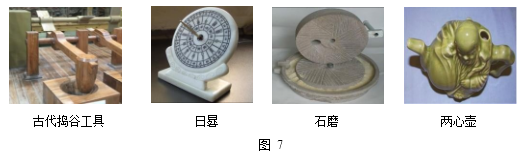
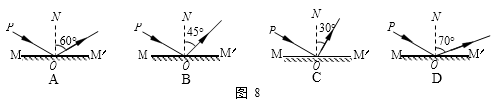

2017年北京市中考物理试题 · 选择题 第16、17、18、19、20题
每小题 2 分。每小题选项全选对的得 2 分，选对但不全的得 1 分，有错选的不得分）
16．图 7 展示了我国古代劳动人民的智慧成果，对其中所涉及的物理知识，下列说法中正确的是

A．古代捣谷工具利用了杠杆原理
B．光沿直线传播是日晷能够测量时间的条件之一
C．碾谷物的石磨选用厚重的石材，目的是为了减小石磨对谷物的压强
D．从两心壶的壶嘴能分别倒出两种不同的液体，这一功能的实现利用了大气压
17．下列说法中正确的是
A．用磁感线可以描述磁场的强弱
B．只要导体在磁场中运动，该导体中就会产生感应电流
C．通电导体产生的磁场的方向与通过该导体的电流方向有关
D．利用撒在磁体周围的铁屑可以判断该磁体周围各点的磁场方向
18．有关热现象，下列说法中正确的是
A．组成物质的分子之间存在引力和斥力
B．在热传递过程中，吸收热量的物体温度升高
C．在四冲程内燃机中，做功冲程的功能是将内能转化为机械能
D．温度低于 0℃的室外，仍有水蒸气存在
19．下列说法中正确的是
A．以行驶的汽车为参照物，路边的树木是运动的
B．只要物体的位置发生变化，物体的机械能就发生变
C．悬浮在盐水中的鸡蛋，受到盐水的作用力的合力为零
D．用锤子将铁钉钉入木板，锤子对铁钉的作用力与铁钉对锤子的作用力大小相等
20．图 8 所示的四个光路图中，MM′为平面镜，PO 为入射光线，ON 为法线，入射角∠PON 等于 60°，其中符合光的反射定律的光路图是
